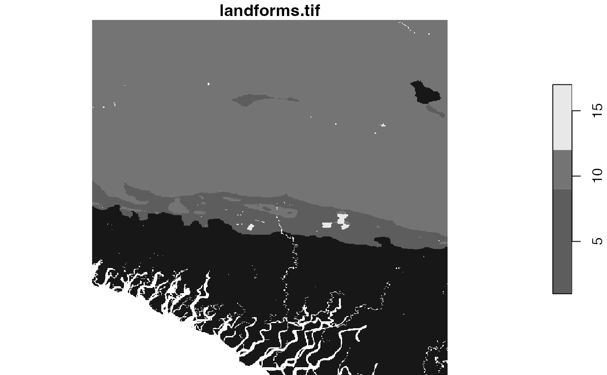
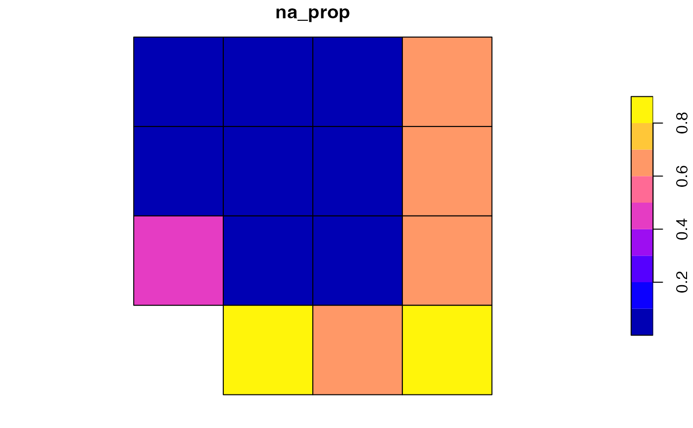

Creates or adds a sf object based on the input object or a set of parameters.
It accepts either an object of class stars or lsp.
In the first case, the output is created based on
a set of parameters (window_size and window_shift or window).
In the second case, the output converts the lsp object into
a sf object.
lsp_add_sf(x = NULL, window = NULL, window_size = NULL, window_shift = NULL) # S3 method for default lsp_add_sf(x = NULL, window = NULL, window_size = NULL, window_shift = NULL) # S3 method for lsp lsp_add_sf(x = NULL, window = NULL, window_size = NULL, window_shift = NULL)
| x | Object of class |
|---|---|
| window | Specifies areas for analysis. Either |
| window_size | Specifies areas for analysis. Either |
| window_shift | Defines the shift between adjacent squares of cells along with the N-S and W-E directions. It describes the density (resolution) of the output grid. The resolution of the output map will be reduced to the original resolution multiplied by the shift. If |
library(stars) landform = read_stars(system.file("raster/landform.tif", package = "motif")) plot(landform)lc_cove = lsp_thumbprint(landform, type = "cove", window_size = 200, normalization = "pdf") lc_cove_lsp = lsp_add_sf(lc_cove) plot(lc_cove_lsp["id"])